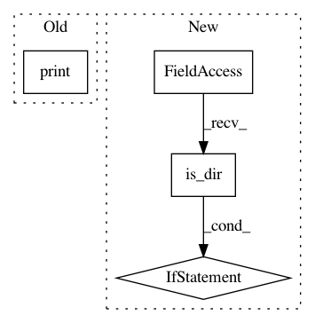

76125cafc9734441b4dab036e345fbb0abf1d84a,deeppavlov/models/ner/ner_network.py,NerNetwork,load,#NerNetwork#,197
Before Change
if ckpt and ckpt.model_checkpoint_path:
print("\n:: restoring checkpoint from", ckpt.model_checkpoint_path, "\n")
saver.restore(self._sess, ckpt.model_checkpoint_path)
print("session restored")
else:
print("\n:: <ERR> checkpoint not found! \n")
def tokens_batch_to_numpy_batch(self, batch_x, batch_y=None):
After Change
@overrides
def load(self):
if self.load_path:
if isinstance(self.load_path, Path) and self.load_path.parent.is_dir():
if tf.train.get_checkpoint_state(self.load_path.parent) is not None:
saver = tf.train.Saver()
print("Restore NerNetwork model from {}".format(str(self.load_path)))
saver.restore(self._sess, str(self.load_path))
else:
warn("Provided `load_path` is incorrect!")
else:
warn("Provided `load_path` is incorrect!")
else:
warn("No `load_path` is provided for {}".format(self.__class__.__name__))
def tokens_batch_to_numpy_batch(self, batch_x, batch_y=None):
In pattern: SUPERPATTERN
Frequency: 3
Non-data size: 4
Instances
Project Name: deepmipt/DeepPavlov
Commit Name: 76125cafc9734441b4dab036e345fbb0abf1d84a
Time: 2018-01-26
Author: ol.gure@gmail.com
File Name: deeppavlov/models/ner/ner_network.py
Class Name: NerNetwork
Method Name: load
Project Name: deepmipt/DeepPavlov
Commit Name: d86f0ef86868899b112ac61e598a3333fac66ad2
Time: 2018-01-24
Author: arkhipov@yahoo.com
File Name: deeppavlov/core/models/tf_model.py
Class Name: TFModel
Method Name: save
Project Name: deepmipt/DeepPavlov
Commit Name: 286a864220a00732d382a75051e11877acf13c3f
Time: 2018-01-24
Author: ol.gure@gmail.com
File Name: deeppavlov/core/models/keras_model.py
Class Name: KerasModel
Method Name: load